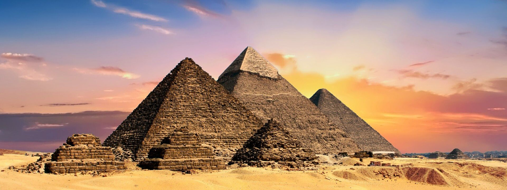

Great Pyramid of Giza
The Great Pyramid of Giza is the oldest and largest pyramid in Egypt.
- Built around 2560 BC.
- It was the tallest man-made structure for over 3,800 years.
- Constructed from over 2 million stone blocks.
The Great Pyramid of Giza is the oldest and largest pyramid in Egypt.
The Colosseum is an ancient arena in Rome, Italy.
The Great Wall of China stretches over 21,000 km.

Machu Picchu is an ancient Incan city in Peru.
Petra is a famous archaeological city in Jordan.

Chichen Itza is a large Mayan archaeological site in Mexico.
The Taj Mahal is a white marble mausoleum in India.
My name is Nayem Hossain. I am a student at Vilnius University of Applied Sciences, learning web development. I created this 7 Wonders of the World website as part of my practice and learning journey.
I am passionate about history, architecture, and travel. This website is my first HTML project on my mobile!